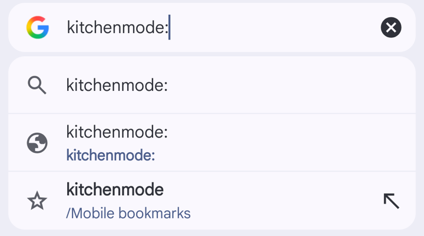

FreeA button for your browser · No app, no accountNo app, no account
No clutter.
Just the
next step.
One click on a recipe page hides the ads, pop-ups and life story, and shows each step a sentence at a time, big enough to read from across the kitchen.
One tap on a recipe page hides the ads, pop-ups and life story, and shows each step a sentence at a time, big enough to read from across the kitchen.
Drag the Kitchen Mode ticket up onto your bookmarks bar. That’s the whole install. No bar? Press ⌘ Shift B.
Phones and tablets have no bookmarks bar, so you paste a short code into a bookmark. It takes a couple of minutes, once.
Works on BBC Good Food, Allrecipes, RecipeTin Eats, Serious Eats and 69 more sites
What it does
Just the recipe
No ads, pop-ups or life story. It reads the recipe itself, not the page around it.
One sentence at a time
Set big enough to read from the hob, with the ingredients that sentence needs beside it.
Timers on tap
Tap “cook for 8–10 mins” and an 8-minute timer starts. It rings until you stop it, even if you close Kitchen Mode.
Screen stays on
No wiping flour off the screen to wake it up. Move on with a tap, a key, a swipe or a foot pedal.
Set it upOnce, on a computerOnce, on this phone or tablet
Hang it on the rail.
Your bookmarks bar is the rail. Kitchen Mode is the ticket you hang on it, ready for every recipe after.
Phones and tablets have no bookmarks bar to drag it to, so it goes in your bookmarks instead. It takes a couple of minutes, once.
- Show your bookmarks bar. Press ⌘ Shift B on a Mac, or Ctrl Shift B on Windows. Chrome, Edge, Brave, Safari and Firefox all have one.
- Drag this ticket up onto the bar.
Kitchen Mode - Test it. Open the test recipe and click Kitchen Mode on the bar. After that, use it the same way on any recipe. Click it again, or press Esc, to close it.
Setting it up on a phone or tablet
You save Kitchen Mode as a bookmark whose address is this short piece of code:
javascript:(function(){var s=document.createElement('script');s.src='https://kitchen-mode.vercel.app/km.js';s.onerror=function(){alert('Kitchen Mode could not load on this page.')};document.documentElement.appendChild(s)})()
Android (Chrome)
- Tap Copy the code.
- Tap ⋮, then the star, to bookmark this page. Then tap the message that pops up at the bottom (Bookmark saved, or Edit) before it goes. (Missed it? Tap ⋮, then Bookmarks, then Mobile bookmarks, then ⋮ next to Kitchen Mode, then Edit.)
- Change the name to
kitchenmode, as one word. In the URL box, press and hold until the whole address is highlighted (tap Select all if it isn’t), then tap Paste. The URL should now start withjavascript:. Go back to this page, and it saves. - Open the test recipe, tap the address bar and type
kitchenmode:with a colon at the end, then tap the suggestion with the star. The colon stops Chrome filling the list with searches, which push the star down behind the keyboard. Always open it this way: tapping it in your bookmarks list does nothing, since Chrome on Android only runs it from the address bar.
These steps are for Chrome. If you normally use Samsung Internet or another browser, open this page in Chrome to set it up. Pages opened from another app, like Gmail, show an ✕ at the top left, and their address bar won’t let you type: tap ⋮, then Open in Chrome browser, first. That goes for recipes too.
iPhone and iPad (Safari)
- Tap Copy the code.
- Tap Share, then Add Bookmark, then Save.
- Open your bookmarks (the book icon), tap Edit, then tap Kitchen Mode. Tap the address, tap ⓧ to clear it, then press and hold and tap Paste. It should start with
javascript:. Tap Done. - Open the test recipe, then open your bookmarks and tap Kitchen Mode.
Once the test works, use it the same way on any recipe. This bookmark loads Kitchen Mode from this site each time, so it stays up to date.
Which sites work
On the menu.
Kitchen Mode doesn’t read the page you see. It reads the copy of the recipe that sites publish for Google, so ads, pop-ups and long introductions never get in the way.
A quick check: if a recipe shows a star rating or cooking time in Google results, Kitchen Mode will almost certainly work on it. Most food blogs work too, especially ones with a “Jump to recipe” button.
If there’s no recipe to read, Kitchen Mode says so and leaves the page alone.
While you cook
Call the next step.
Your screen stays on while Kitchen Mode is open. A Bluetooth page-turner pedal or presentation clicker works as the next button too, so your hands never have to touch the screen.
Timers keep going if you close Kitchen Mode: they wait in the corner of the page and ring there. Tap one to get back to your step.
- Next line
- Space or →, tap the right side, or swipe left
- Back
- ←, tap the left side, or swipe right
- Start a timer
- Tap a highlighted time like ⏱︎ 5 mins, or press T
- Stop a timer
- Tap it when it rings, or press Esc
- Tick off ingredients
- Tap them on the first screen
- Close
- Esc, or click Kitchen Mode on the bar again